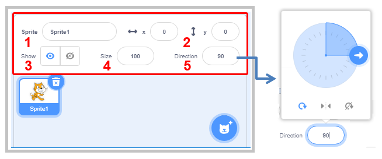
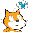

Scratch Programming Environment¶

Would you like to create your own computer game, animated story, instruction or presentation? Scratch is a programming language that enables you to create all of these things, and more.
Unlike the majority of common programming languages, Scratch is a visual programming language – instead of typing commands by using the keyboard, programs are created by connecting color coded blocks, which represent different commands, something like making different objects by using LEGO bricks.
In Scratch, projects are created. The first step in creating a project is adding Sprites that will participate in it. Different looks, sounds and behaviors can be attached to all of the sprites. The behavior of a sprite is described by the Script. The project contains one or more scripts; each is associated with a sprite or a stage - the place where the project takes place.
In order to write a program in Scratch, first, it is necessary to get to know the environment in which the programs are created or its interface.
Scratch Programming Interface.
The following Figure shows the interface of the Scratch programming language.

First, we will learn about the basic functions of its main parts, and in the following lessons we will get to know other components of the environment.
The Stage is the place where your stories, games and animations will come to life. The stage itself is stationary, but it has sprites on it that can move and interact with one another.
The Blocks Palette is the area where all available commands of the Scratch programming language are kept. It is called “palette” because it looks like a palette a painter uses while painting. However, unlike a painter, a programmer creates live pictures with objects that interact with each other.
Scripts Area is a place where the scripts are created. To make a script, you need to drag blocks from the Blocks Palette to the Scripts Area and snap them together.
The Sprite List displays names and thumbnails of all sprites in your project.
The Menu Bar allows you to set project management commands and adjust the environment itself.
My First Program
Even the longest journeys begin with a single step. That first step in learning a programming language would be to write a program which would display the words “Hello World” on the screen. This is how we will start mastering Scratch.
Whenever Scratch is activated, the stage is automatically created, and it is composed of a white rectangle with a cat sprite in it.
The stage and sprites are objects whose behavior is programmed by Scratch commands. We build scripts, which describe the behavior of the objects, by using blocks, which correspond to language commands. Every object has its own behavior, even the stationary stage, which, for example, can change its backdrop.
Stages and sprites can be associated with graphics (pictures - drawings, photos) and sound files in addition to scripts. The look of a sprite is called the costume, and the look of the stage a backdrop.
The Sprite list shows thumbnails of all the sprites involved in the project. The name of each sprite is written below the thumbnail.
You can view and modify the current sprite information in the window above the Sprite List.
{kind=link}
The Name of the sprite can be changed by typing a new name in the sprite’s name field.
The Position of the sprite on the stage is defined by its coordinates x and y.
Whether the sprite is visible or hidden on the Stage, depends on what is checked in the Show checkbox.
The Size of the sprite is expressed as a percentage of the original size. The number 100 indicates that the Sprite is viewed in its normal size.
The Direction indicates the direction in which the Sprite will move. The white arrow in the blue circle shows the direction of the sprite. You can change the direction by rotating the arrow or typing the appropriate number in the direction field (0: up, 90: right, 180: down, -90: left).
 indicates the rotation style, which can be: all around, left-right, or don’t rotate.
indicates the rotation style, which can be: all around, left-right, or don’t rotate.
To create a script, you need to drag the appropriate commands from the command palette to the script area of the active object and link them.
An active object - a sprite or a stage, is recognized by the fact that there is a blue frame around its thumbnail in the Sprite list. Everything we create: scripts that describe behavior, costumes that describe the look, sounds that will be heard when we run our project, is associated with the object that is active in the moment of creation.
Scripts are created by snapping blocks together. Clicking anywhere within a series of blocks runs the complete script, which is executed from top to bottom.
 Study the following examples¶
Study the following examples¶
Example 1 - The “Hello World” Project¶
The simplest possible script will be added to the Scratch trademark cat. It consists of a single command - a block that allows the Sprite to say Hello World, that is, the text will appear in a speech bubble next to the cat. This is how you do it:
 Click on the Looks group of blocks located in the Blocks Palette. A group of purple blocks, designed for attributing visual effects to sprites, will appear.
Click on the Looks group of blocks located in the Blocks Palette. A group of purple blocks, designed for attributing visual effects to sprites, will appear.
 Drag the
Drag the  block to the script area.
block to the script area.
 Then, instead of the text Hello, type Hello World and click on the modified block.
Then, instead of the text Hello, type Hello World and click on the modified block.

The speech bubble with the text Hello World will remain on the Stage next to the cat for 2 seconds. As you can see, it is quite simple.
Now we are going to add a few more blocks to make our sprite say a few more sentences.
We will show here two different ways you can add a block that already exists in the scripts area.
By repeating the steps we have already done: one more time, drag another
block from the Blocks Palette and instead of the text Hello type I am a cat.
Right-click on the block in the Scripts Area to open the shortcut menu and select Duplicate from it. Then write the text you want in the copy of the block, in our example - I like to walk. This way you can work faster, since you can copy multiple blocks that have been previously linked, with just one move.

To make the blocks run automatically one after the other, you need to put them together in a stack. We do this by dragging blocks. When the blocks get close to one another, a shadow appears around the block above, which means that the blocks will be connected. When we connect all three blocks in a stack and then double click on them, the Sprite will say all three sentences one after another.
Running the Project
You noticed that the block you used had a notch at the top and a bump on the bottom. A block that has this shape is called a stack block. Most of the Scratch commands are assigned to stack blocks. However, the first block, which indicates which event will trigger the script, does not need to have a notch at the top, since there are no blocks above it. These blocks are called hat blocks and most of them can be found in the Events group. Click on the Events group in the Blocks Palette and drag the  block to the Scripts Area. Then place this block on top of the previously formed stack, and your project is done. To run it click on
block to the Scripts Area. Then place this block on top of the previously formed stack, and your project is done. To run it click on  above the top left corner of the stage.
above the top left corner of the stage.
Saving the Project
This is how you can save the project on your computer:
Click on File in the Menu Bar.
Select the option Save to your computer.
In the opened dialogue window, select a folder and enter the name under which you will save your project, and then click the Save button.
Upgrading the Project
Instead of displaying a speech bubble with the text in it, the cat can actually say what is written. You can do this by selecting the  block from the Sound group, and then recording in the sound editor the sentence you want the cat to say. After you have done this, select the recorded speech instead of meow from the drop-down list of this block.
block from the Sound group, and then recording in the sound editor the sentence you want the cat to say. After you have done this, select the recorded speech instead of meow from the drop-down list of this block.
However, in this version of Scratch, you can do more than that. Among the extensions, there is a Text-to-Speech group that allows sprites to start speaking for real. You can do this only if you are connected to the Internet because it uses Amazon Web Services.
 Did you understand?¶
Did you understand?¶
Are you confused as to how you can answer the questions which have not been explained in the text yet? Simply open Scratch and try!
Question 1¶
- script
- object
- interface
- True.
- code
Q-20: What is the name of all windows and icons, which are visible when you open Scratch?
Question 2¶
Some parts of the Scratch interface are marked with numbers from 1 to 5.
{kind=link}
-
Drag the name of each part of the environment to the corresponding position in the image.
Try again
- stage
- 4
- blocks palette
- 2
- scripts area
- 3
- sprite list
- 5
- menu bar
- 1
Question 3¶
- yes
- False. Project needs to have а stage with at least one backdrop.
- no
- True.
Q-21: Can you make a project that doesn’t have a stage?
Question 4¶
- yes
- True.
- no
- False. The project can have only scripts which are associated with the stage.
Q-22: Can you make a project that doesn’t have sprites?
Question 5¶
- yes
- False. The object needs to have at least one look, the stage - backdrop, and the sprite - costume.
- no
- True.
Q-23: Can you create a stage or a sprite without assigning a look to them?
Question 6¶
- yes
- False. Some sprites and stages can just be decoration for the project.
- no
- True.
Q-24: Does every object in the project need to have at least one script associated with it?
Question 7¶
- yes
- True.
- no
- False. The project starts running when you click on the Green Flag, and it stops when you click on the Red Stop Sign.
Q-25: Do the Green Flag and the Red Stop Sign allow you to control script execution?
Question 8¶
- menu bar
- sprite list
- True.
- scripts area
- blocks palette
Q-26: What is the name of the place where we can find thumbnails of all sprites participating in the project?
Question 9¶
- looks
- suits
- costumes
- True.
- masks
Q-27: The sprite can have one or more _______, this enables it to change its appearance during the running of the project.
Question 10¶
- presentations
- scripts
- graphics files
- sound files
Q-28: What can be assigned to stages and sprites? (Select all correct answers)
It’s time to explore.
 Try it!¶
Exercise 1 - Exploring Tutorials¶
By clicking on Tutorials in the Menu Bar (1) you will open a library of short instructions for creating different projects in Scratch. Select the tutorial First Steps (2) and watch the associated video (3), then by clicking on white arrows in green circles (4) you can review the steps for creating simple projects similar to our “Hello World”.

Exercise 2 - Sprite Information¶
In the active sprite’s information, change the direction of movement of the sprite so that it goes up. What will happen on the stage?
How will the sprite be directed if you set a value of 45 degrees as the direction of movement?
With the mouse-pointer move the sprite and follow what is happening with the coordinates in the active sprite’s information.
Check what happens to the sprite if the option for it to be hidden is selected in the Show box. How can you get the sprite back on the stage?
 Change the name of the active sprite.
Change the name of the active sprite.
You can add a new Sprite by clicking on the button located in the bottom right corner of the Sprite List.

Exercise 3 - Introducing New Sprites¶
Import a new sprite from the Sprite Library.
By clicking on the Choose a Sprite button you will open the Sprite Library. Now you need to click on the sprite you like - for example, the ballerina sprite.
Draw a new sprite using the built-in image editor.
By clicking on the Paint option, instead of the Code tab you will open the Costumes tab. The Paint Editor, which you can use to draw your new sprite, will open where the Script Area was previously. When you are done just click the Code tab.
Import a few surprise sprites from the Sprite Library.
Import a new sprite from a file by clicking the Upload Sprite option.
Exercise 4 - Duplicating and Deleting Sprites¶
Right-click on the sprite in the Sprite List, choose the option duplicate from the shortcut menu and make 3 copies of the sprite.
Remove one of the copies by choosing delete from the shortcut menu.
Enter numbers 50 and 200 in the size boxes so that one copy is half the size and one copy is double the size of the original.
Exercise 5 - Using Sound¶
Warning. You can complete this exercise only if your computer has an audio recording option!
Explore the Tutorial Record sound, and try to create a project where the sprite will say the phrase “Hello World” in your voice. As this exercise uses the Sound Editor which we will introduce later, you can skip this and come back to it later.
Open Scratch.
Click on Sound group of commands located in the Blocks Palette. A group of light purple blocks for the sound effects that can be assigned to the sprites will appear.
Drag the block to the Scripts Area.
Click on the Sound tab. The Sound Editor window will open.
Click on Choose a Sound, then select the recording option.
 When the Recording dialogue box appears, click on the record button, then say the phrase “Hello World” and then stop recording.
When the Recording dialogue box appears, click on the record button, then say the phrase “Hello World” and then stop recording.
 Listen to the recording and if you like it click Save. Another sound named recording1 will appear in the list of sounds associated with the cat sprite.
Listen to the recording and if you like it click Save. Another sound named recording1 will appear in the list of sounds associated with the cat sprite.
 Go back to the Code tab and instead of the sound meow choose recording1. If you click on the green flag, the cat will say the sentence you recorded.
Go back to the Code tab and instead of the sound meow choose recording1. If you click on the green flag, the cat will say the sentence you recorded.
 Add two more blocks, then add to them the recordings of two more sentences you want the cat to say.
Add two more blocks, then add to them the recordings of two more sentences you want the cat to say.
 Snap the blocks together to form a stack and place block on the top. Save this project under the name “Hello World2”.
Snap the blocks together to form a stack and place block on the top. Save this project under the name “Hello World2”.
Exercise 6 - Using the Extension Text to Speech¶
Warning. You can complete this exercise only if your computer is connected to the Internet!
Explore the Tutorial Create Animations that Talk then try to create a project in which your sprite will say “Hello World” with the  block. This exercise uses commands which will be elaborated later, so you can skip this exercise also, and come back to it after.
block. This exercise uses commands which will be elaborated later, so you can skip this exercise also, and come back to it after.
Open Scratch.
Click on the  icon located on the bottom of the Block Palette. The Extension blocks will appear.
icon located on the bottom of the Block Palette. The Extension blocks will appear.
From the Extensions blocks you need to select  . Three new blocks will appear in the block palette. These blocks will enable the sprite to say the text written in the block input field , in the language set in the
. Three new blocks will appear in the block palette. These blocks will enable the sprite to say the text written in the block input field , in the language set in the  block. You can also set the type of voice which will be used: female (soprano or alt) or male (tenor or bass). This is done with the block.
block. You can also set the type of voice which will be used: female (soprano or alt) or male (tenor or bass). This is done with the block.
Drag the block to the scripts area.
Drag the block to the scripts area and choose the voice of the Sprite.
Drag the block to the scripts area and type in Hello World into its input field.
Add two more blocks, then type in the other two sentences spoken by the cat.
Snap the blocks together to form a stack and place the block on the top.
Save this project under the name “Hello World3”.
 Debug it!¶
Debug it!¶
Bug 1¶
The pupil wanted to make his/her own version of the project “Hello World”. In it, the sprite should say one sentence after another: Hello World, My name is Mike, I like programming. He attached the sprite to the following script.

But after clicking on the green flag, the Sprite said only I like programming. What’s the bug?
 Summary¶
Summary¶
In the first lesson we got to know the main parts of the Scratch programming language interface, and we created, ran and saved our first program - project “Hello World”. By doing exercises, we showed how we can make sprites say sentences we recorded ourselves by using the Sound Editor or those uploaded from the Text to Speech extension (only if the computer is connected to the internet).
Scratch projects: 1Studio
New concepts: interface, Scratch project, active object, sprites, costumes, stage, backdrop, scripts, blocks.
Scratch commands:  - ;
- ;  - ,
- ,  ;
;  -
-  ; - , , .
; - , , .
Note. Instructions marked with the sign will be discussed in the lessons that follow.
 Create a project¶
Create a project¶
Project 1 - “About me”¶
Create a project that will tell us something about you. Choose a boy or a girl sprite from the Sprite library and attach a script that will make the sprite say the following three sentences: “My name is …”, “I’m … years old” and “My school is called …”. Insert your information instead of the dots.